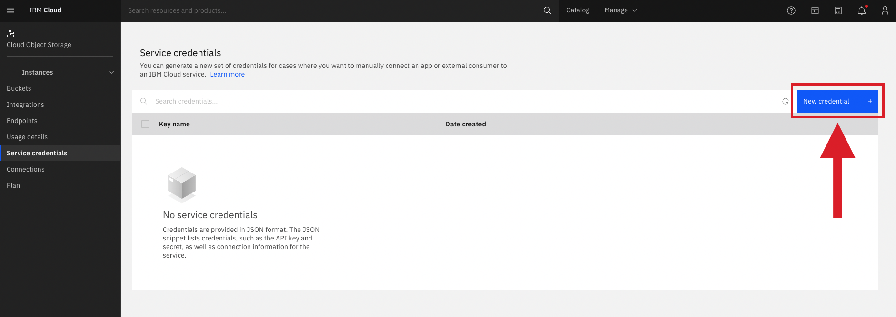
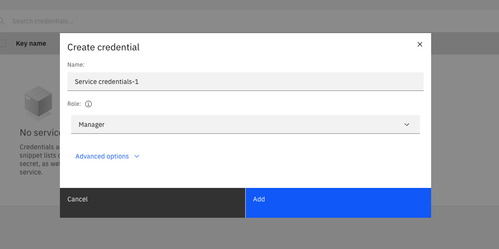
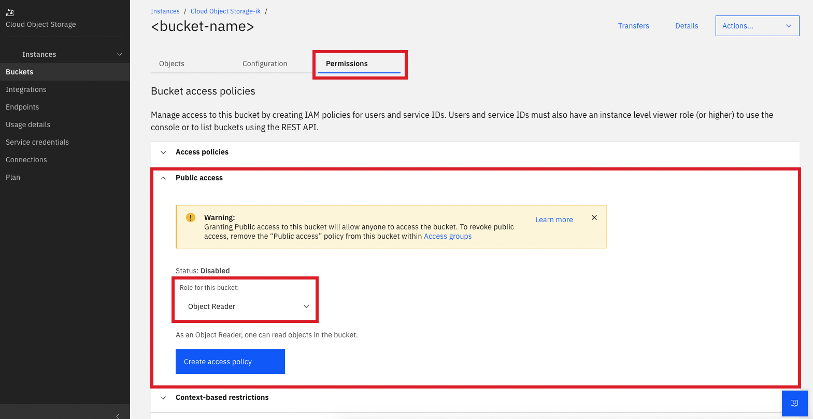

IBM Research
View the Project on GitHub IBM/customized-voice-text-bot-for-whatsapp-telegram
Learn more about
Deploying to IBM Cloud and others
Telegram
WhatsApp
Running locally
Telegram
WhatsApp
Setup Watson ServicesSetup Data Storage
Customizing Text-to-Speech
Customizing Speech-to-Text
Setup data storage
As shown in the application architecture below, we built the app based on IBM technologies, such as Watson Assistant, Object Storage, and Code Engine. The data storage components of the application are the IBM Cloud Object Storage and IBM Cloudant Database.

IBM Cloudant
Cloudant is a document-oriented NoSQL database-as-a-service offered on the IBM Cloud (Cloudant documentation).
In this project, Cloudant stores the bot's conversation history with WA session IDs, timestamps and links to media sent by the user and the bot. The document ID in the DB is the encrypted user mobile number. You can edit the Python script to remove the cryptography if you want.
Listed below are the environment variables (env vars) required to enable our application to make requests to the Cloudant API:
- IBM_CLOUDANT_APIKEY
- IBM_CLOUDANT_URL
- IBM_CLOUDANT_DATABASE
You can find more information about the Cloudant API here.
Obtaining the Cloudant environment variables
- Obtaining Cloudant API key & URL
- Obtaining Cloudant Database name
On IBM Cloud, after creating a Cloudant lite instance, go to resource list and search for your created instace and click on it. Then, click on 'service credentials', a screen like the image below should appear:

On that screen, click on 'new credential', a pop-up will appear:

Choose the Manager role then click Add. After, open the created credential and copy the apikey value and the url value and paste in your .env file.
After creating Cloudant service and copying the API key and URL, launch the dashboard. Then, click on 'Create database'.

Choose a name for your database and write in the box. Then, select 'non-partitioned' and click on 'Create'. Done, your DB were created. Now, on the .env file, assign to IBM_CLOUDANT_DATABASE var the database name you chose.
To access database contents, access the IBM Cloud website, go to the resource list, open the created Cloudant instance, click on 'launch dashboard' and click on your database.
IBM Cloud Object Storage
IBM Cloud Object Storage (COS) is a highly available, durable, and secure platform for storing unstructured data. Unstructured data [...] refers to data that is not highly structured in the manner of a database. Object storage is the most efficient way to store PDFs, media files, database backups, disk images, or even large structured datasets (COS documentation).
In this project, IBM Cloud Object Storage is utilized to store binary files generated from bot interactions with users, such as media files (e.g. images and audio files).
Listed below are the environment variables (env vars) required to enable our application to make requests to the COS API:
- COS_API_KEY_ID
- COS_BUCKET
- COS_BUCKET_LINK
- COS_ENDPOINT
- COS_INSTANCE_CRN
You can find more information about the COS API here.
Obtaining the COS environment variables
- Obtaining
COS_API_KEY_ID - Obtaining
COS_BUCKET - Obtaining
COS_BUCKET_LINK - Obtaining
COS_ENDPOINT - Obtaining
COS_INSTANCE_CRN
On IBM Cloud, after creating a Object Storage Lite plan instance, go to resource list, search for your created instace and click on it. Then, click on 'service credentials', a screen like the image below should appear:
On that screen, click on 'New credential', a pop-up will appear:

Choose the Manager role then click Add. After, open the created credential and copy the apikey value and paste in your .env file as the value for the COS_API_KEY_ID variable.
The value for the COS_BUCKET env var is the name of the bucket. To create a bucket, go to the bucket page by clicking in the button on left, and then click on "Create bucket".
Then, choose "Customize your bucket". In the new screen, write the name of your bucket and set the following configurations, as the image below shows:
Resiliency: Regional
Location: us-south
Storage class: standard
And create the bucket by clicking in the button "Create bucket". Do not forget to write the name of your bucket as the value for the env var COS_BUCKET in the .env file.
To obtain this value, we need to change the Policy Access of the bucket. For this, enter into the bucket page you have created before, click on the tab "Permissions", then open the tab "Public Access" and set the role "Object reader" for the bucket. The image below show this screen and the configuration.
If the tab "Public Access" are not visible for you, please folow this tutorial to create a new access policy for your IBM Cloud account.
After creating the access policy for your bucket, go back to the buckets main page. On the new screen, as the image below shows, click on the button in the right to your bucket, then click on "Public URL" and the URL that is shown to you. Paste the content as the value for the COS_BUCKET_LINK var in the .env file.
Enter on your bucket page, then click on the tab "Configurations". Then, scroll down to the "Endpoint" section and copy the public URL, as the image below shows. Then, paste the content as the value to the COS_ENDPOINT var in the .env file.
In the same page as the previous item, scroll up to the "Bucket detail" section and copy the "Bucket Instance CRN" value that is shown to you. Paste the content as the value for the COS_INSTANCE_CRN var in the .env file.
To access the files stored in the COS bucket, launch the bucket page contents and click on the "Objects" tab. Then, select the object you wish to open, copy the Object Public URL, and use it to access and download the file.